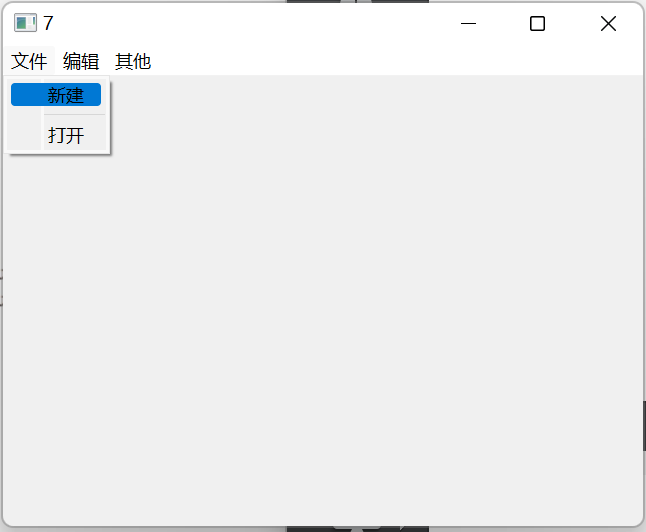

QT-new-6
QT NEW6
QMainWindow是一个为用户提供主窗口程序的类，它包含一个菜单栏，多个工具栏，多个铆接部件，一个状态栏和一个中心部件，是多个应用程序的基础，如文本编辑器，图片编辑器等等
现在我们尝试创建一个QMainWindow，并运行之：
好小！调整一下，在MainWindow里头resize一下完事！
#include "mainwindow.h"
MainWindow::MainWindow(QWidget *parent)
: QMainWindow(parent)
{
resize(640,480);
}
MainWindow::~MainWindow()
{
}
下面创建一个菜单栏，他是QMenuBar类的
QMenuBar* bar = menuBar();
// 设置当前窗口的菜单栏
setMenuBar(bar);
// 设定名称
// 事实上不是这样用的，但是为了展示效果如此
bar->addMenu("文件"); 好吧，事实上是我们是使用一个菜单对象来接受之：
QMenu* fileMenu = bar->addMenu("文件"); 我们这样做是为了后续的其他操作！比如说，现在我们想点击它让他下拉一个菜单来，那就
fileMenu->addAction("新建");
//添加一个分割符
fileMenu->addSeparator();
fileMenu->addAction("打开");
工具栏
//工具栏
QToolBar* toolBar = new QToolBar(this);
addToolBar(toolBar); 这个流程为我们的窗口添加了一个工具栏
看到有变化！是的就是我们的工具栏。
工具栏是允许有多个的！我们再仔细瞧瞧其他的add重载函数！
这个引起了我们的注意
这个函数究竟实现了啥功能呢？把这个函数扔进QT 帮助手册里
这个地方，点击第一个参数的类去
很明显了！就是再说这个工具栏初始时停靠在哪里！
addToolBar(Qt::LeftToolBarArea,toolBar); 这是设计默认区域。总结一下
#include "mainwindow.h"
#include<QMenuBar>
#include<QToolBar>
#include<QDebug>
MainWindow::MainWindow(QWidget *parent)
: QMainWindow(parent)
{
//重置窗口大小
resize(640,480);
//创建菜单栏，最多只能有一个
QMenuBar* bar= menuBar();
//设置显示窗口为当前窗口
setMenuBar(bar);
//菜单
QMenu* fileMenu = bar->addMenu("文件");
QMenu* editMenu = bar->addMenu("编辑");
//添加菜单项
fileMenu->addAction("新建");
//添加分隔符
fileMenu->addSeparator();
fileMenu->addAction("打开");
//添加工具栏
QToolBar* toolBar = new QToolBar(this);
addToolBar(Qt::LeftToolBarArea,toolBar);
}
MainWindow::~MainWindow()
{
} 下面说说它只允许停靠在一个方向。我们可以查看QToolBar的成员函数：
// constructor
QToolBar(const QString &title, QWidget *parent = Q_NULLPTR)
QToolBar(QWidget *parent = Q_NULLPTR)
// destructor
~QToolBar()
QAction *
actionAt(const QPoint &p) const
QAction *
actionAt(int x, int y) const
QAction *
addAction(const QString &text)
QAction *
addAction(const QIcon &icon, const QString &text)
QAction *
addAction(const QString &text, const QObject *receiver, const char *member)
QAction *
addAction(const QIcon &icon, const QString &text, const QObject *receiver, const char *member)
QAction *
addAction(const QString &text, const QObject *receiver, PointerToMemberFunction method)
QAction *
addAction(const QString &text, Functor functor)
QAction *
addAction(const QString &text, const QObject *context, Functor functor)
QAction *
addAction(const QIcon &icon, const QString &text, const QObject *receiver, PointerToMemberFunction method)
QAction *
addAction(const QIcon &icon, const QString &text, Functor functor)
QAction *
addAction(const QIcon &icon, const QString &text, const QObject *context, Functor functor)
QAction *
addSeparator()
QAction *
addWidget(QWidget *widget)
Qt::ToolBarAreas
allowedAreas() const
void
clear()
QSize
iconSize() const
QAction *
insertSeparator(QAction *before)
QAction *
insertWidget(QAction *before, QWidget *widget)
bool
isAreaAllowed(Qt::ToolBarArea area) const
bool
isFloatable() const
bool
isFloating() const
bool
isMovable() const
Qt::Orientation
orientation() const
void
setAllowedAreas(Qt::ToolBarAreas areas)
void
setFloatable(bool floatable)
void
setMovable(bool movable)
void
setOrientation(Qt::Orientation orientation)
QAction *
toggleViewAction() const
Qt::ToolButtonStyle
toolButtonStyle() const
QWidget *
widgetForAction(QAction *action) const 看到
bool
isAreaAllowed(Qt::ToolBarArea area) const 不正是表明停靠范围！
toolBar->setAllowedAreas(Qt::RightToolBarArea|Qt::LeftToolBarArea); 以及设置是否可以浮动：
toolBar->setFloatable(false); 甚至可以设置是否可以移动！
toolBar->setMovable(false); 下面设置内容：
toolBar->addAction("这是action 1");
toolBar->addAction("这是action2");
//使用这个方法表明的是跟菜单栏是公用同一个功能的！
//需要接受返回值
//QAction* newAct = fileMenu->addAction("新建");
toolBar->addAction(openAct);
//其他类似
toolBar->addAction(newAct); 工具栏也可以添加分割线：
toolBar->addSeparator(); 还可以添加控件！！！
QPushButton* btn = new QPushButton("a btn for the toolBar",this);
toolBar->addWidget(btn);状态栏
最多也只能有一个
QStatusBar* stbar = statusBar();
setStatusBar(stbar);
QLabel* lab = new QLabel("a mentions",this);
// QLable是Widget控件
stbar->addWidget(lab);// 左侧
QLabel* lab2 = new QLabel("2 mentions",this);
stbar->addPermanentWidget(lab2);//右侧 也可以添加铆接部件，可以有多个
//铆接部件（可以一大堆）
QDockWidget* dock = new QDockWidget(this);
addDockWidget(Qt::BottomDockWidgetArea,dock);
//设置中心部件.可以别让浮动窗口占据窗口
QTextEdit* edit = new QTextEdit(this);
setCentralWidget(edit);
dock->setAllowedAreas(Qt::TopDockWidgetArea); 对于全局者，都是set,只能有一个，反之可以多个（add_）
回顾一下：
#include "mainwindow.h"
#include<QMenuBar>
#include<QToolBar>
#include<QDebug>
#include<QPushButton>
#include<QStatusBar>
#include<QLabel>
#include<QDockWidget>
#include<QTextEdit>
MainWindow::MainWindow(QWidget *parent)
: QMainWindow(parent)
{
//重置窗口大小
resize(1640,880);
//创建菜单栏，最多只能有一个
QMenuBar* bar= menuBar();
//设置显示窗口为当前窗口
setMenuBar(bar);
//菜单
QMenu* fileMenu = bar->addMenu("文件");
QMenu* editMenu = bar->addMenu("编辑");
//添加菜单项
QAction* newAct= fileMenu->addAction("新建");
//添加分隔符
fileMenu->addSeparator();
QAction* openAct= fileMenu->addAction("打开");
//添加工具栏
QToolBar* toolBar = new QToolBar(this);
addToolBar(Qt::LeftToolBarArea,toolBar);
//设置允许停靠区域
toolBar->setAllowedAreas(Qt::RightToolBarArea|Qt::LeftToolBarArea);
//设置行为
toolBar->addAction("这是action 1");
toolBar->addAction("这是action2");
toolBar->addAction(openAct);
toolBar->addSeparator();
toolBar->addAction(newAct);
//放置控件
QPushButton* btn = new QPushButton("a btn for the toolBar",this);
toolBar->addWidget(btn);
//状态栏
QStatusBar* stbar = statusBar();
setStatusBar(stbar);
//加点东西
QLabel* lab = new QLabel("a mentions",this);
// QLable是Widget控件
stbar->addWidget(lab);
QLabel* lab2 = new QLabel("2 mentions",this);
stbar->addPermanentWidget(lab2);
//铆接部件（可以一大堆）
QDockWidget* dock = new QDockWidget(this);
addDockWidget(Qt::BottomDockWidgetArea,dock);
//设置中心部件.可以别让浮动窗口占据窗口
QTextEdit* edit = new QTextEdit(this);
setCentralWidget(edit);
dock->setAllowedAreas(Qt::TopDockWidgetArea);
}
MainWindow::~MainWindow()
{
}
添加资源文件
我们现在打开UI设计一栏，现在可以直接开始先设计后构建代码逻辑了
菜单项必须必须输入英文，这是因为跟变量命名有关，可以后续改动text 值来改变显示
其他就不多阐述了，类似的。
如何使用代码访问ui呢？会带mainwindow.cpp
MainWindow::MainWindow(QWidget *parent) :
QMainWindow(parent),
ui(new Ui::MainWindow)
{
ui->setupUi(this); // 类似于这样的！
} 添加一个图标吧：
ui->actionnew->setIcon(QIcon("D:/QT projects/9/source/1.png")); 首先先把资源放到项目目录路径下，不然肯定找不到！
如何快速的在项目中添加文件呢？先去右键项目：添加性文件，选择QT下的Qt resource files
然后，添加：会发现要求你写一个前缀，这是为了分类资源文件。可以偷懒直接写一个\
在项目中引用只需要按照格式：
: + prefix + fileName 也即是: + 前缀加上文件名即可
ui->actionnew->setIcon(QIcon(":/source/1.png"));